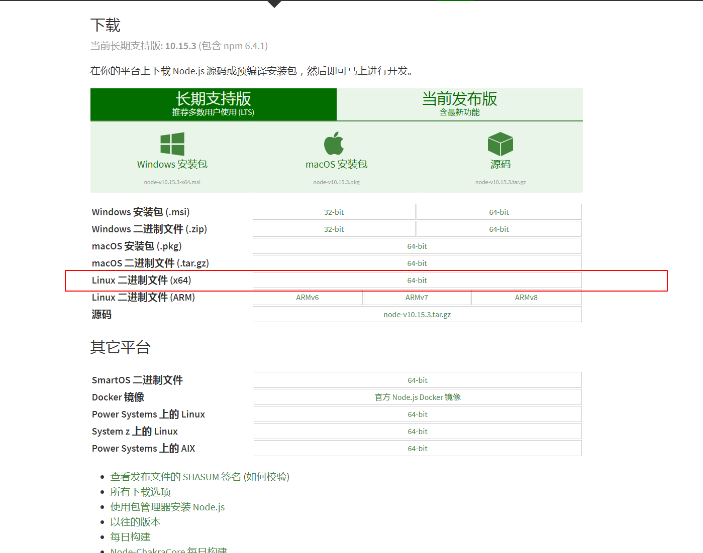
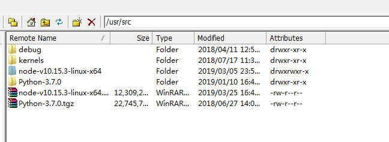
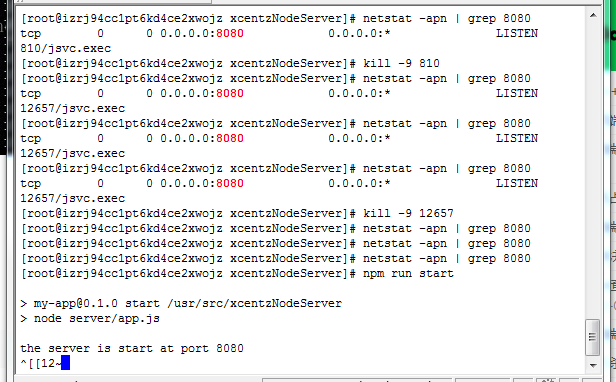

1.安装node 下载地址:
下载地址: https://nodejs.org/zh-cn/download/
- 下载页面 --版本选择 node-v10.15.3-linux-x64.tar

下载 node-v10.15.3-linux-x64.tar.xz 至 /user/src 目录下 
2.创建软链接，使node和npm命令全局有效(通过创建软链接的方法，使得在任意目录下都可以直接使用node和npm命令) 分别执行下面两条命令
ln -s /usr/src/node-v10.15.3-linux-x64/bin/node /usr/local/bin/node
ln -s /usr/src/node-v10.15.3-linux-x64/bin/npm /usr/local/bin/npm
3.将项目文件移动到相关目录下
1.利用ftp传文件 2.利用git拉代码到本地
4.安装项目依赖
cd /usr/src/xcentzNodeServer
npm i //安装依赖
npm run build //生产环境构建
node server/app.js //项目入口文件 启动服务
open in http://localhost:8080/
如果遇到8080端口被占用 杀死相关进程即可
查找占用的程序 netstat -apn | grep 8080
杀掉对应的进程，彻底杀死进程

启动项目doc库
- 安装gitbook与gitbook脚手架
npm i gitbook gitbook-cli -g - 构建gitbook
npm run doc